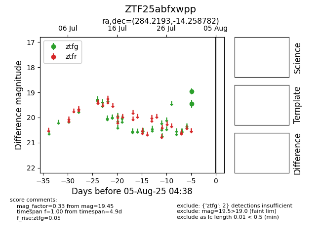

Target ZTF25abfxwpp at 2025-08-05 04:38, see:
FINK: fink-portal.org/ZTF25abfxwpp
Lasair: lasair-ztf.lsst.ac.uk/objects/ZTF25abfxwpp
ALeRCE: alerce.online/object/ZTF25abfxwpp
alt names
ZTF25abfxwpp (ztf,fink)
coordinates:
equatorial (ra, dec) = (284.2193,-14.25878)
galactic (l, b) = (20.7754,-7.63025)
photometry
last ztfg=19.45
2 ztfg detections
